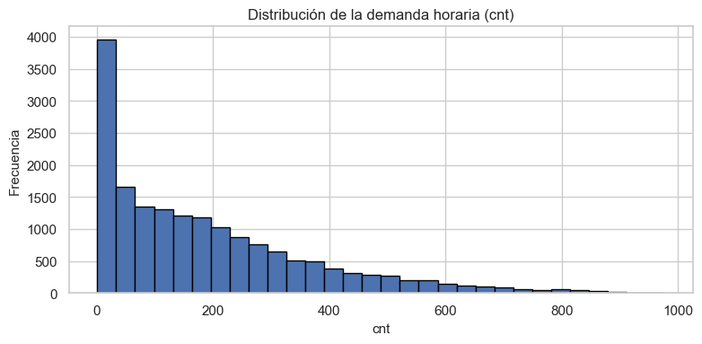
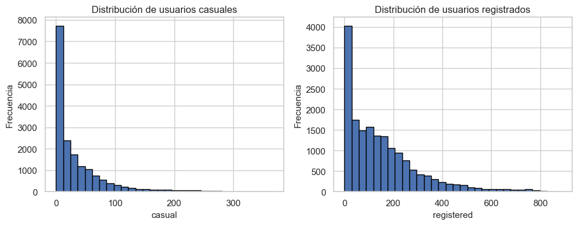
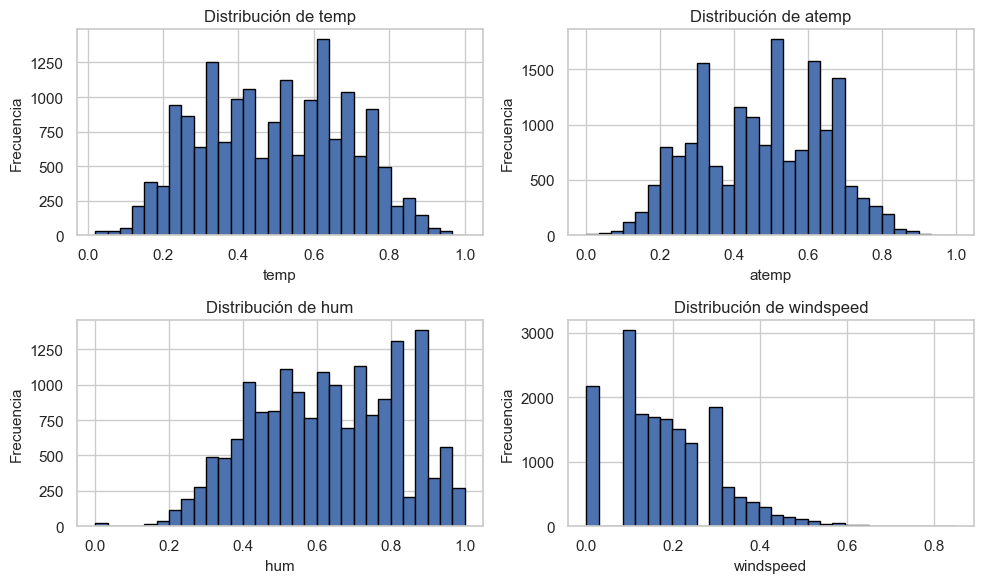
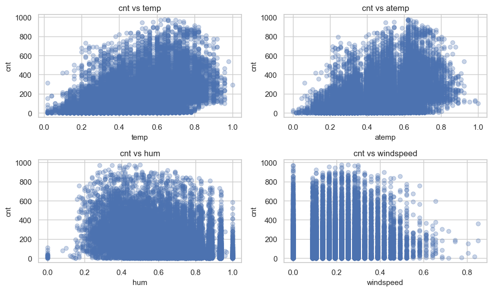
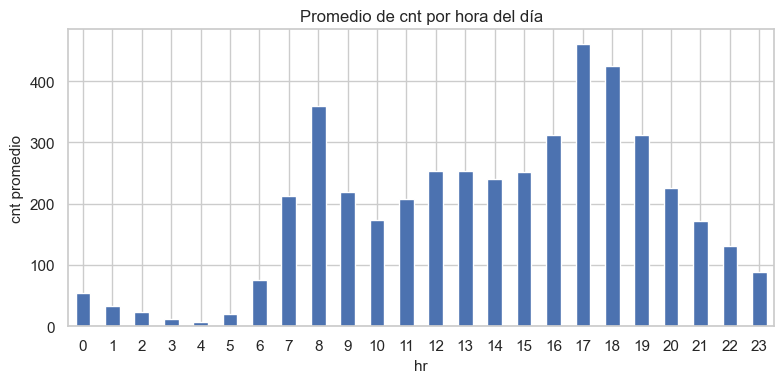
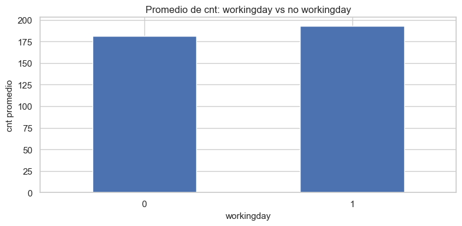
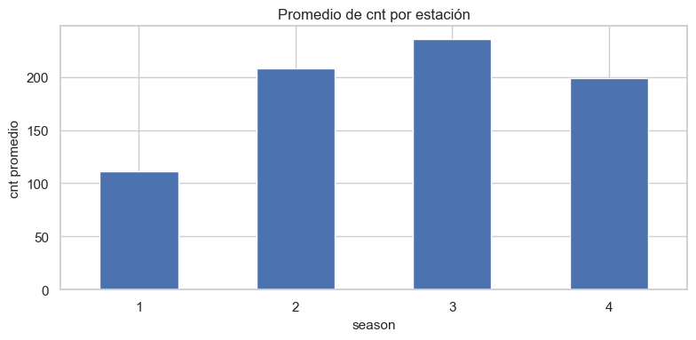

Capítulo 1 – Análisis Exploratorio de Datos (EDA)#
Sistema de Bicicletas Compartidas – Dataset hour.csv#
En este capítulo realizamos un análisis exploratorio inicial del conjunto de datos
horario del sistema de bicicletas compartidas. El objetivo es entender la estructura
de los datos, las variables disponibles y sus relaciones básicas con la demanda
de bicicletas (cnt).
Este notebook está diseñado para formar parte del libro Jupyter-Book del proyecto de regresión lineal múltiple avanzada.
1. Carga de librerías y datos#
Primero importamos las librerías necesarias y cargamos el archivo hour.csv
desde la carpeta data/ ubicada en el directorio raíz del proyecto.
import pandas as pd
import numpy as np
import matplotlib.pyplot as plt
import seaborn as sns
# Configuración general de gráficos
sns.set(style="whitegrid")
plt.rcParams["figure.figsize"] = (8, 4)
plt.rcParams["axes.titlesize"] = 12
plt.rcParams["axes.labelsize"] = 11
# Ruta relativa al archivo de datos desde la carpeta 'book'
data_path = "../data/hour.csv"
df = pd.read_csv(data_path)
df.head()
| instant | dteday | season | yr | mnth | hr | holiday | weekday | workingday | weathersit | temp | atemp | hum | windspeed | casual | registered | cnt | |
|---|---|---|---|---|---|---|---|---|---|---|---|---|---|---|---|---|---|
| 0 | 1 | 2011-01-01 | 1 | 0 | 1 | 0 | 0 | 6 | 0 | 1 | 0.24 | 0.2879 | 0.81 | 0.0 | 3 | 13 | 16 |
| 1 | 2 | 2011-01-01 | 1 | 0 | 1 | 1 | 0 | 6 | 0 | 1 | 0.22 | 0.2727 | 0.80 | 0.0 | 8 | 32 | 40 |
| 2 | 3 | 2011-01-01 | 1 | 0 | 1 | 2 | 0 | 6 | 0 | 1 | 0.22 | 0.2727 | 0.80 | 0.0 | 5 | 27 | 32 |
| 3 | 4 | 2011-01-01 | 1 | 0 | 1 | 3 | 0 | 6 | 0 | 1 | 0.24 | 0.2879 | 0.75 | 0.0 | 3 | 10 | 13 |
| 4 | 5 | 2011-01-01 | 1 | 0 | 1 | 4 | 0 | 6 | 0 | 1 | 0.24 | 0.2879 | 0.75 | 0.0 | 0 | 1 | 1 |
1.1. Estructura general del dataset#
Revisamos el número de observaciones, variables y tipos de datos para tener una primera idea de la información disponible.
df.shape
(17379, 17)
df.dtypes
instant int64
dteday object
season int64
yr int64
mnth int64
hr int64
holiday int64
weekday int64
workingday int64
weathersit int64
temp float64
atemp float64
hum float64
windspeed float64
casual int64
registered int64
cnt int64
dtype: object
df.isna().sum()
instant 0
dteday 0
season 0
yr 0
mnth 0
hr 0
holiday 0
weekday 0
workingday 0
weathersit 0
temp 0
atemp 0
hum 0
windspeed 0
casual 0
registered 0
cnt 0
dtype: int64
1.2. Conversión de variables categóricas#
Algunas variables son códigos enteros que representan categorías (por ejemplo,
estación, mes, hora, tipo de día, condiciones climáticas, etc.). Las convertimos
al tipo category para facilitar su manejo en análisis posteriores.
categorical_cols = [
"season", "yr", "mnth", "hr", "holiday",
"weekday", "workingday", "weathersit"
]
for col in categorical_cols:
if col in df.columns:
df[col] = df[col].astype("category")
df[categorical_cols].head()
| season | yr | mnth | hr | holiday | weekday | workingday | weathersit | |
|---|---|---|---|---|---|---|---|---|
| 0 | 1 | 0 | 1 | 0 | 0 | 6 | 0 | 1 |
| 1 | 1 | 0 | 1 | 1 | 0 | 6 | 0 | 1 |
| 2 | 1 | 0 | 1 | 2 | 0 | 6 | 0 | 1 |
| 3 | 1 | 0 | 1 | 3 | 0 | 6 | 0 | 1 |
| 4 | 1 | 0 | 1 | 4 | 0 | 6 | 0 | 1 |
2. Variable objetivo: demanda de bicicletas (cnt)#
La variable de interés principal es cnt, que representa el número total de
alquileres de bicicletas (usuarios casuales + registrados) en cada hora.
A continuación analizamos su distribución.
df["cnt"].describe()
count 17379.000000
mean 189.463088
std 181.387599
min 1.000000
25% 40.000000
50% 142.000000
75% 281.000000
max 977.000000
Name: cnt, dtype: float64
fig, ax = plt.subplots()
ax.hist(df["cnt"], bins=30, edgecolor="black")
ax.set_title("Distribución de la demanda horaria (cnt)")
ax.set_xlabel("cnt")
ax.set_ylabel("Frecuencia")
plt.tight_layout()
plt.show()

3. Variables de uso relacionadas: casual y registered#
Además de cnt, el dataset incluye:
casual: usuarios que alquilan bicicletas de manera ocasional.registered: usuarios registrados en el sistema.
Analizamos su distribución y relación con cnt.
df[["casual", "registered"]].describe()
| casual | registered | |
|---|---|---|
| count | 17379.000000 | 17379.000000 |
| mean | 35.676218 | 153.786869 |
| std | 49.305030 | 151.357286 |
| min | 0.000000 | 0.000000 |
| 25% | 4.000000 | 34.000000 |
| 50% | 17.000000 | 115.000000 |
| 75% | 48.000000 | 220.000000 |
| max | 367.000000 | 886.000000 |
fig, axes = plt.subplots(1, 2, figsize=(10, 4))
axes[0].hist(df["casual"], bins=30, edgecolor="black")
axes[0].set_title("Distribución de usuarios casuales")
axes[0].set_xlabel("casual")
axes[0].set_ylabel("Frecuencia")
axes[1].hist(df["registered"], bins=30, edgecolor="black")
axes[1].set_title("Distribución de usuarios registrados")
axes[1].set_xlabel("registered")
axes[1].set_ylabel("Frecuencia")
plt.tight_layout()
plt.show()

df[["cnt", "casual", "registered"]].corr()
| cnt | casual | registered | |
|---|---|---|---|
| cnt | 1.000000 | 0.694564 | 0.972151 |
| casual | 0.694564 | 1.000000 | 0.506618 |
| registered | 0.972151 | 0.506618 | 1.000000 |
4. Variables ambientales#
El dataset incluye variables climáticas normalizadas:
temp: temperatura normalizada.atemp: sensación térmica normalizada.hum: humedad relativa.windspeed: velocidad del viento normalizada.
Analizamos su distribución y posibles relaciones con la demanda cnt.
env_vars = ["temp", "atemp", "hum", "windspeed"]
df[env_vars].describe()
| temp | atemp | hum | windspeed | |
|---|---|---|---|---|
| count | 17379.000000 | 17379.000000 | 17379.000000 | 17379.000000 |
| mean | 0.496987 | 0.475775 | 0.627229 | 0.190098 |
| std | 0.192556 | 0.171850 | 0.192930 | 0.122340 |
| min | 0.020000 | 0.000000 | 0.000000 | 0.000000 |
| 25% | 0.340000 | 0.333300 | 0.480000 | 0.104500 |
| 50% | 0.500000 | 0.484800 | 0.630000 | 0.194000 |
| 75% | 0.660000 | 0.621200 | 0.780000 | 0.253700 |
| max | 1.000000 | 1.000000 | 1.000000 | 0.850700 |
fig, axes = plt.subplots(2, 2, figsize=(10, 6))
axes = axes.ravel()
for i, col in enumerate(env_vars):
axes[i].hist(df[col], bins=30, edgecolor="black")
axes[i].set_title(f"Distribución de {col}")
axes[i].set_xlabel(col)
axes[i].set_ylabel("Frecuencia")
plt.tight_layout()
plt.show()

fig, axes = plt.subplots(2, 2, figsize=(10, 6))
axes = axes.ravel()
for i, col in enumerate(env_vars):
axes[i].scatter(df[col], df["cnt"], alpha=0.3)
axes[i].set_title(f"cnt vs {col}")
axes[i].set_xlabel(col)
axes[i].set_ylabel("cnt")
plt.tight_layout()
plt.show()

5. Variables temporales#
Las variables temporales permiten estudiar patrones por hora, día de la semana, estación y año:
hr: hora del día (0–23).weekday: día de la semana.workingday: indicador de día laboral.season: estación del año.yr: año (por ejemplo, 0 = 2011, 1 = 2012).
A continuación, exploramos cómo varía cnt a lo largo de estas dimensiones.
# Promedio de 'cnt' por hora del día
cnt_by_hr = df.groupby("hr")["cnt"].mean()
fig, ax = plt.subplots()
cnt_by_hr.plot(kind="bar", ax=ax)
ax.set_title("Promedio de cnt por hora del día")
ax.set_xlabel("hr")
ax.set_ylabel("cnt promedio")
plt.xticks(rotation=0)
plt.tight_layout()
plt.show()
C:\Users\User\AppData\Local\Temp\ipykernel_36764\3530942428.py:2: FutureWarning: The default of observed=False is deprecated and will be changed to True in a future version of pandas. Pass observed=False to retain current behavior or observed=True to adopt the future default and silence this warning.
cnt_by_hr = df.groupby("hr")["cnt"].mean()

# Promedio de 'cnt' por día laboral vs no laboral
if "workingday" in df.columns:
fig, ax = plt.subplots()
df.groupby("workingday")["cnt"].mean().plot(kind="bar", ax=ax)
ax.set_title("Promedio de cnt: workingday vs no workingday")
ax.set_xlabel("workingday")
ax.set_ylabel("cnt promedio")
plt.xticks(rotation=0)
plt.tight_layout()
plt.show()
C:\Users\User\AppData\Local\Temp\ipykernel_36764\4159658422.py:4: FutureWarning: The default of observed=False is deprecated and will be changed to True in a future version of pandas. Pass observed=False to retain current behavior or observed=True to adopt the future default and silence this warning.
df.groupby("workingday")["cnt"].mean().plot(kind="bar", ax=ax)

# Promedio de 'cnt' por estación
if "season" in df.columns:
fig, ax = plt.subplots()
df.groupby("season")["cnt"].mean().plot(kind="bar", ax=ax)
ax.set_title("Promedio de cnt por estación")
ax.set_xlabel("season")
ax.set_ylabel("cnt promedio")
plt.xticks(rotation=0)
plt.tight_layout()
plt.show()
C:\Users\User\AppData\Local\Temp\ipykernel_36764\470849457.py:4: FutureWarning: The default of observed=False is deprecated and will be changed to True in a future version of pandas. Pass observed=False to retain current behavior or observed=True to adopt the future default and silence this warning.
df.groupby("season")["cnt"].mean().plot(kind="bar", ax=ax)

6. Matriz de correlación#
Calculamos la matriz de correlación para un subconjunto de variables numéricas
de interés, incluyendo la demanda de bicicletas (cnt). Esto nos permitirá
identificar relaciones lineales potencialmente útiles para el modelo.
numeric_cols = [
col for col in df.columns
if df[col].dtype != "category" and col not in ["instant"]
]
corr = df[numeric_cols].corr()
corr["cnt"].sort_values(ascending=False)
---------------------------------------------------------------------------
ValueError Traceback (most recent call last)
Cell In[18], line 5
1 numeric_cols = [
2 col for col in df.columns
3 if df[col].dtype != "category" and col not in ["instant"]
4 ]
----> 5 corr = df[numeric_cols].corr()
6 corr["cnt"].sort_values(ascending=False)
File ~\miniconda3\envs\ml_venv_bikes\lib\site-packages\pandas\core\frame.py:11076, in DataFrame.corr(self, method, min_periods, numeric_only)
11074 cols = data.columns
11075 idx = cols.copy()
> 11076 mat = data.to_numpy(dtype=float, na_value=np.nan, copy=False)
11078 if method == "pearson":
11079 correl = libalgos.nancorr(mat, minp=min_periods)
File ~\miniconda3\envs\ml_venv_bikes\lib\site-packages\pandas\core\frame.py:2002, in DataFrame.to_numpy(self, dtype, copy, na_value)
2000 if dtype is not None:
2001 dtype = np.dtype(dtype)
-> 2002 result = self._mgr.as_array(dtype=dtype, copy=copy, na_value=na_value)
2003 if result.dtype is not dtype:
2004 result = np.asarray(result, dtype=dtype)
File ~\miniconda3\envs\ml_venv_bikes\lib\site-packages\pandas\core\internals\managers.py:1713, in BlockManager.as_array(self, dtype, copy, na_value)
1711 arr.flags.writeable = False
1712 else:
-> 1713 arr = self._interleave(dtype=dtype, na_value=na_value)
1714 # The underlying data was copied within _interleave, so no need
1715 # to further copy if copy=True or setting na_value
1717 if na_value is lib.no_default:
File ~\miniconda3\envs\ml_venv_bikes\lib\site-packages\pandas\core\internals\managers.py:1772, in BlockManager._interleave(self, dtype, na_value)
1770 else:
1771 arr = blk.get_values(dtype)
-> 1772 result[rl.indexer] = arr
1773 itemmask[rl.indexer] = 1
1775 if not itemmask.all():
ValueError: could not convert string to float: '2011-01-01'
plt.figure(figsize=(10, 8))
sns.heatmap(corr, cmap="coolwarm", center=0, annot=False)
plt.title("Matriz de correlación (variables numéricas)")
plt.tight_layout()
plt.show()
7. Variables candidatas para el modelo de regresión#
A partir del análisis exploratorio, de la interpretación de las variables y de
las correlaciones con cnt, una primera selección de variables candidatas
para el modelo de regresión lineal múltiple podría incluir:
Variables de uso:
registered,casual(según el objetivo, podrían ser explicativas o parte de otros modelos intermedios).
Variables ambientales:
temp,atemp,hum,windspeed.
Variables temporales y de calendario:
hr,weekday,workingday,season,yr,weathersit.
En los siguientes capítulos refinaremos esta selección mediante criterios estadísticos (correlaciones, multicolinealidad, significancia, validación cruzada, etc.) y consideraciones de interpretabilidad.
8. Conclusión del EDA inicial#
En este capítulo:
Exploramos la estructura del dataset
hour.csv.Analizamos la distribución de la demanda
cnty las variables de uso.Estudiamos la relación de
cntcon variables ambientales y temporales.Identificamos un conjunto inicial de variables candidatas para el modelo.
En el próximo capítulo abordaremos la preparación y transformación de datos, incluyendo codificación de variables categóricas, posibles transformaciones y la construcción de matrices de diseño para los modelos de regresión.